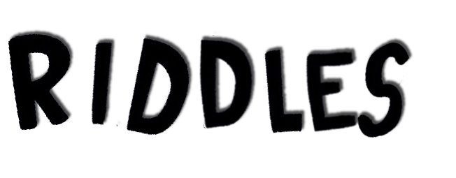

Einstein's Riddle...
Level:
There are 5 houses in 5 different colors. In each house lives a person with a different nationality. The 5 owners drink a certain type of beverage, smoke a certain brand of cigar, and keep a certain pet. No owners have the same pet, smoke the same brand of cigar, or drink the same beverage.The question is: Who owns the fish?
The Brit lives in the red house.
The Swede keeps dogs as pets.
The Dane drinks tea.
The green house is on the left of the white house.
The green homeowner drinks coffee.
The person who smokes Pall Mall rears birds.
The owner of the yellow house smokes Dunhill.
The man living in the center house drinks milk.
The Norwegian lives in the first house.
The man who smokes Blend lives next to the one who keeps cats.
The man who keeps the horse lives next to the man who smokes Dunhill.
The owner who smokes Bluemaster drinks beer.
The German smokes prince.
The Norwegian lives next to the blue house.
The man who smokes Blend has a neighbor who drinks water.